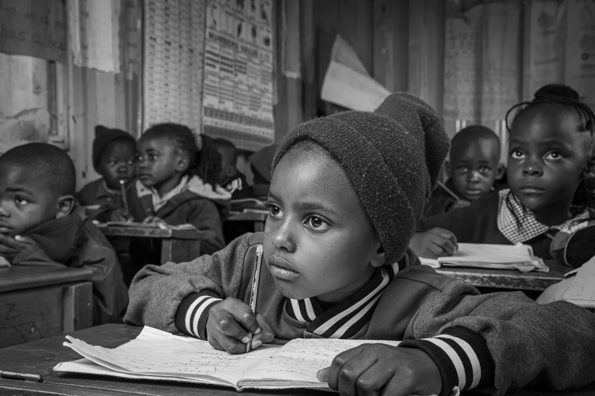
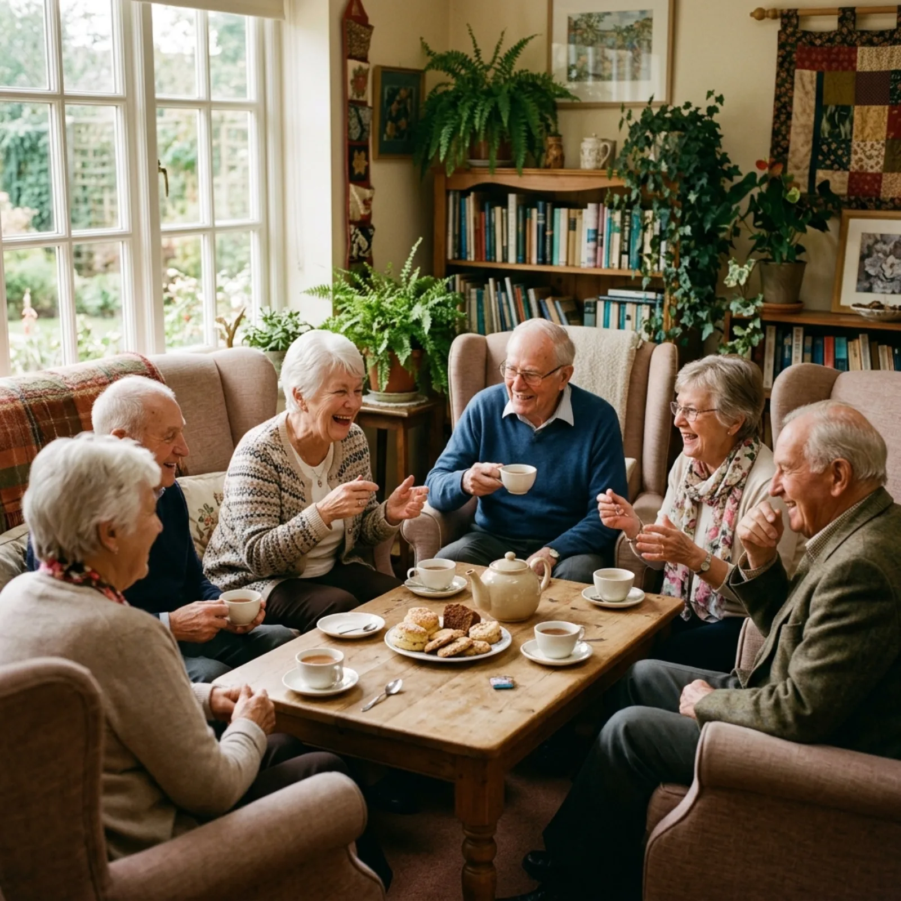
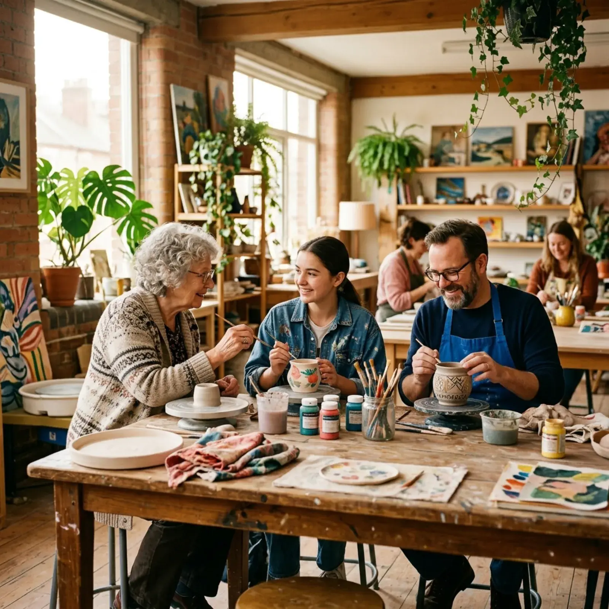

Programmes
Our programmes
From learning support to creative expression, we are shaping meaningful programmes around the real needs of our community, with volunteers and partners confirmed as each area develops.
Homework club and academic support
Our homework club is being shaped as a quiet, supportive learning space where children and young people can focus, build confidence, and get encouragement from trusted local volunteers and partners where available.
- Quiet and structured study space after school
- General homework encouragement and study routine support
- Access to books, worksheets, and quiet study materials where available
- Building confidence and positive study habits
- Signposting to specialist academic support where needed
Children develop stronger study routines, greater confidence, and a more positive relationship with learning.

Individual tutoring and mentoring
Our tutoring and mentoring offer is being developed with appropriate volunteers and partner organisations. The aim is to connect young people with trusted adults who can offer encouragement, study confidence, and practical guidance when capacity is confirmed.
- One-to-one or small group support when suitable mentors are confirmed
- Study skills and confidence-building conversations
- Personal development and confidence building
- Goal setting and positive mentoring relationships
- Referral to partner support where a young person needs specialist help
Young people gain confidence, set realistic goals, and build relationships with positive role models.

Youth activities and engagement
Our youth programme offers a wide range of positive, engaging activities designed to help young people develop skills, build friendships, and make constructive use of their time. We provide a safe and supportive environment where young people can be themselves and explore their interests.
- Creative workshops and hands-on projects
- Group discussions on topics that matter to young people
- Life skills, teamwork, and communication training
- Sports and recreational activities
- Leadership development and volunteering opportunities
Young people build self-esteem, develop practical skills, and form positive connections with peers and mentors.
Women's group and support network
Our women's group creates a warm, welcoming space where women can come together for support, connection, and personal growth. Whether you are looking for parenting advice, wellbeing sessions, or simply a friendly cup of tea and conversation, you are welcome here.
- Wellbeing and self-care sessions
- Parenting support discussions and workshops
- Skills development and confidence building
- Social gatherings and community events
- A safe and supportive space to share and be heard
Women build stronger support networks, develop new skills, and feel more confident and connected in their community.

Men's group and community support
Our men's group provides a relaxed, supportive environment where men can come together to talk, learn, and connect. We understand that men often face barriers to seeking support, and we aim to create a space where it feels natural and comfortable to do so.
- Open discussion forums on topics that matter
- Personal development and wellbeing sessions
- Volunteering and community involvement opportunities
- Recreational activities and social events
- Peer support in a relaxed, non-judgemental setting
Men develop stronger social connections, improved wellbeing, and a greater sense of purpose and belonging.

Elderly community engagement
Our elderly engagement programme ensures that older residents remain a valued and active part of community life. We offer regular social gatherings, wellness activities, and creative sessions designed to reduce isolation and promote wellbeing.
- Tea mornings and social meetups as capacity allows
- Gentle wellness sessions and health awareness
- Storytelling and sharing life experiences
- Arts, crafts, and creative activities
- Intergenerational events with younger community members
Older residents enjoy less isolation, better wellbeing, and a stronger sense of belonging in their community.

Creative arts, reading, and poetry
Our creative programme makes arts, reading, and poetry a natural part of community life. Whether you are an experienced artist or have never picked up a paintbrush, our workshops are designed to be welcoming, expressive, and open to all.
- Art workshops with painting, drawing, and mixed media
- Reading groups for all ages and interests
- Poetry writing workshops and spoken word sessions
- Community exhibitions and creative showcases
- Creative activities for children and young people
Participants discover new forms of self-expression, build confidence, and experience the joy of creative community.

Interested in one of our programmes?
We would love to tell you more. Get in touch and we will help you find the right programme for you or your family.